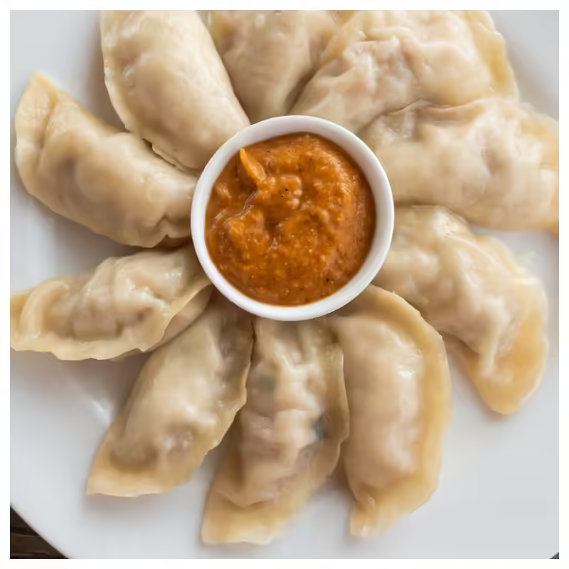

Nepali Cuisine
From hearty Dal Bhat to flavorful Momo, Nepali food is diverse, spicy, and deeply rooted in tradition.

Dal Bhat
The staple meal with lentils, rice, vegetables, and pickles, enjoyed daily across Nepal.

Momo
Steamed or fried dumplings with savory fillings, often accompanied by spicy sauces.

Aloo Tama
A traditional curry made from potatoes and fermented bamboo shoots, reflecting authentic flavors.